프로젝트의 구성은 프로젝트 파일(.sspx)과 서비스 시나리오 파일(.ssfx), 메뉴 시나리오 파일(.msfx)로 구성됩니다.
Solution File
.SSSX
· Solution File 이며 프로젝트 파일 리스트를 가지고 있습니다. ForCusStudio 에서 시나리오를 열때 솔루션 파일을 열어야 합니다.
Project File
.SSPX
· Project File 이며 서비스 시나리오 파일(.ssfx) 및 메뉴 시나리오 파일(.msfx) 들이 포함되어 있습니다. 솔루션 오픈 후에 프로젝트를 열수 있습니다.
· Service Scenario File 이며 일반 서비스 시나리오 파일 입니다.
· Menu Scenario File 이며 메뉴에서 호출한 시나리오를 처리하기 위한 메뉴 시나리오 파일 입니다.
프로젝트를 새로 생성하게 되면 기본적으로 4개의 서비스 시나리오 파일이 생성이 됩니다. 이 시나리오 파일들은 서비스에서 각각의 용도로 사용이 되는 서비스 기본 파일이므로 변경 및 삭제가 불가능 합니다.
· 서비스 종료 시에 종료 전 처리를 하는 시나리오 파일 입니다. 통계작성, CDR기록 등 하나의 콜이 종료 될때 처리할 내용으로 시나리오를 구성 합니다.
· 통계작성, CDR기록 등 하나의 콜이 종료 될때 처리할 내용으로 시나리오를 구성 합니다.
· 서비스 중 에러가 발생 했을 때 처리 하는 시나리오 파일 입니다.
· 프로젝트에서 전역에 해당 하는 서비스 시나리오 파일입니다. 여기에 선언된 모든 내용은 프로젝트에 포함된 모든 시나리오에서 사용 가능합니다.
· 사용 할 수 있는 아이템은 제한되어 전역에 해당하는 아이템만 사용할 수 있습니다.
· 변수정의, 멘트정의, 메뉴정의, 전문정의, 로그정의, 사용자함수정의 등을 할 수 있습니다.
· 서비스 시작 시나리오 파일입니다.
· WaitInbound와 WaitOutbound를 사용 하여 전화를 기다릴 수 있습니다.
· File 메뉴의 New Service Scenario, New Menu Scenario나 리본메뉴의 Home > Open... > New service scenario, New menu scenario 를 누르면 됩니다.
프로젝트 오픈 시에만 가능하며 생성 시 프로젝트에 자동 추가됩니다.
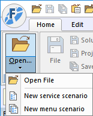
· 새파일 생성을 하면 파일 이름을 입력하는 창이 팝업되며, 생성한 파일 타입에 따라 기본 파일명이 주어집니다.
기본 파일명은 랜덤한 숫자가 붙어서 생성되는데 원하는 파일명으로 수정할 수 있으며 저장 버튼을 누르면 파일이 저장되고 프로젝테 자동으로 추가됩니다.
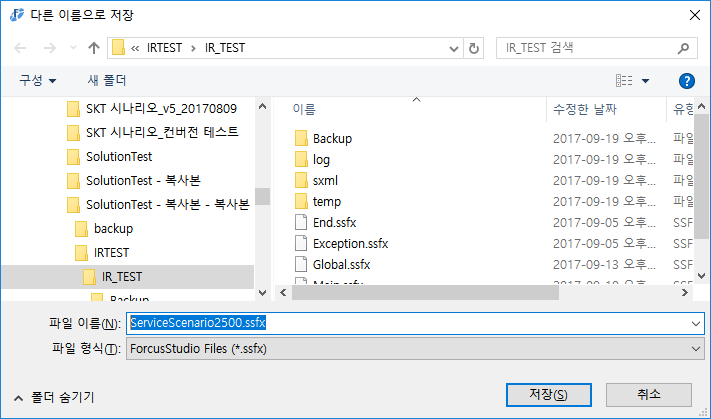
· 리본메뉴 Window > New Service, New Menu 에서 도 시나리오 생성이 가능합니다.
프로젝트 오픈이 아니여도 가능하며 프로젝트에 자동 추가되지 않습니다.
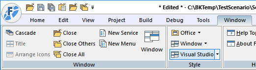
파일 이름을 입력하는 창이 팝업되지 않고 편집할 수 있도록 뷰가 먼저 오픈됩니다.
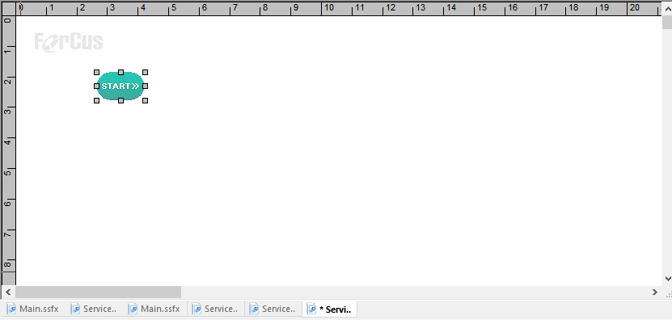
편집 후 저장을 누르면 파일 이름을 입력하는 창이 팝업되며 이때 파일 이름을 변경하여 저장할 수 있습니다.
· 프로젝트가 오픈된 경우는 Project Workspace Window에서 소속된 시나리오 파일을 오픈할 수 있습니다.
· File 메뉴의 Open이나 리본메뉴의 Home > Open.. > Open File 을 누르면 됩니다.
단, 프로젝트가 오픈되어 있고 Active Project가 선택되어 있는 상태에서 프로젝트에 소속되지 않은 파일은 오픈할 수 없습니다.
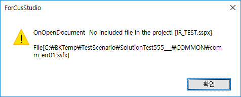
· 열기 다이얼로그가 팝업이 되는데 기본 오픈 설정 디렉토리는 프로젝트 파일을 오픈한 디렉토리 이며, 최종 파일을 오픈한 디렉토리가 기본 오픈 설정 디렉토리가 됩니다.
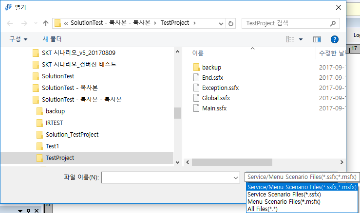
Service/Menu Scenario Files (*.ssfx;*.mssf)
Service Scenario File(*.ssfx) - 서비스 시나리오 파일
Menu Scenario File(*.msfx) - 메뉴 시나리오 파일
All Files(*.*)
· File 메뉴의 Save나 리본메뉴의 Home > Save > File 을 누릅니다.
Save는 편집 화면이 변경된 경우에 활성화 됩니다.
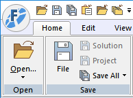
· 저장 시 아이템의 위치만 변경되었을 경우는 저장만 하지만 아이템의 속성이 변경된 경우는 IID(Item Information Data)와 자동완성 데이터 처리가 됩니다.
프로젝트에 포함되지 않은 파일의 경우에는 저장만 됩니다.
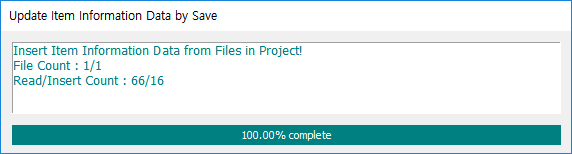
· File 메뉴의 Save As..나 리본메뉴의 Home > Save > Save File As...를 누릅니다.
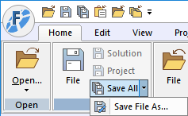
· Save As Dialog가 팝업되어 저장할 이름을 입력 할 수 있습니다.
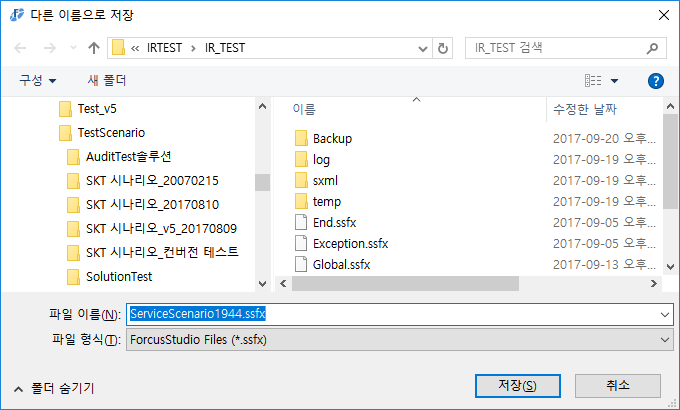
· 현재 편집 중인 시나리오를 다른이름으로 저장합니다. 저장과 동시에 현재 편집 중인 시나리오는 닫히고 다른 이름으로 저장한 시나리오가 오픈되어 편집할 수 있습니다.
· 다른 이름으로 저장한 시나리오는 프로젝트에 자동으로 포함 되지는 않습니다.
· File메뉴의 Save All 이나 리본 메뉴의 Home > Save > Save All 을 누릅니다. 프로젝트에 포함된 시나리오 파일 중 열려있는 모든 파일에 해당하며, 변경된 시나리오 파일이 발생하면 활성화 됩니다.
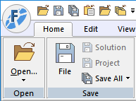
· 저장 아이템과 마찬가지로 아이템의 속성이 변경된 경우는 IID(Item Information Data)와 자동완성 자료가 갱신 됩니다.
· File메뉴의 Close 나 편집창이 전체 창일 경우 리본메뉴 가장 오른쪽의 시스템 버튼
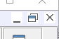
에서 버튼을 누르면 되며, 전체 창이 아닐 경우는 편집 윈도우의 화면 상단 오른쪽의 시스템 버튼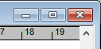
에서 버튼을 누르면 됩니다.· 편집 창이 전체 창일 경우에는 편집 창 하단에 시나리오 이름 탭이
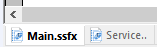
있는데 닫을 시나리오 탭에 마우스 더블클릭 하면 닫을 수 있습니다.
· 저장 않된 파일이 있을 경우 저장 유무 확인 창을 팝업 하며, 저장을 선택 했을 때 아이템 속성이 변경된 내용이 있을 경우 IID와 자동완성 자료가 갱신 됩니다.
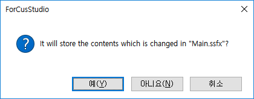
· 프로젝트에 포함된 열려 있는 모든 파일에 해당되며, 저장 되지 않은 파일에 대해서는 저장 확인 유무 창을 팝업 합니다. 저장을 선택하면 아이템 속성이 변경된 내용 이 있을 경우 IID와 자동완성 자료가 갱신 됩니다.

팝업 메뉴에서 Save Scenario, Close Scenario
· 편집화면 빈 곳에 마우스 오른 버튼을 누르면 메뉴가 팝업되는데 Save, Close, Close All, Close Others 를 할수 있습니다.
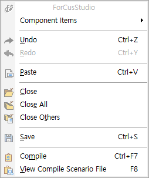
Open List 에서 현재 오픈된 시나리오 리스트를 확인 할 수 있습니다.
· 리본 메뉴 Home > Scenario > Open List 를 누르면 오픈된 시나리오 파일 리스트 창이 팝업 되는데 Save, Close, Close All, Close Others 를 할수 있습니다.
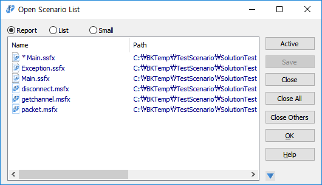
Scenario List 에서 현재 선택한 프로젝트에 소속된 시나리오 파일 정보 리스트를 확인 할 수 있습니다.
· 리본 메뉴 Home > Scenario > Scenario List 를 누르면 현재 선택된 프로젝트에 소속된 시나리오 파일 리스트 창이 팝업 되는데 파일이름, 경로, 날자, 사이즈를 알수 있으며 파일로 출력(.txt) 가능합니다. 리스트 헤더를 누르면 정렬이 가능하며 리스트에서 파일을 더블클릭(또는 마우스 오른 버튼) 하면 파일이 오픈 됩니다.
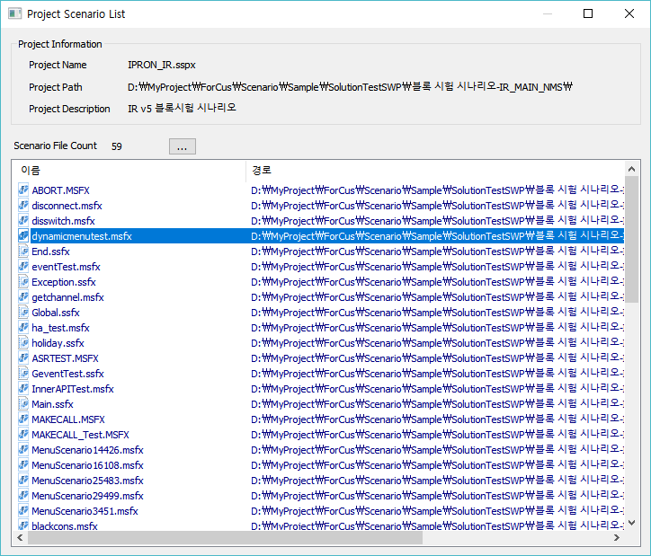